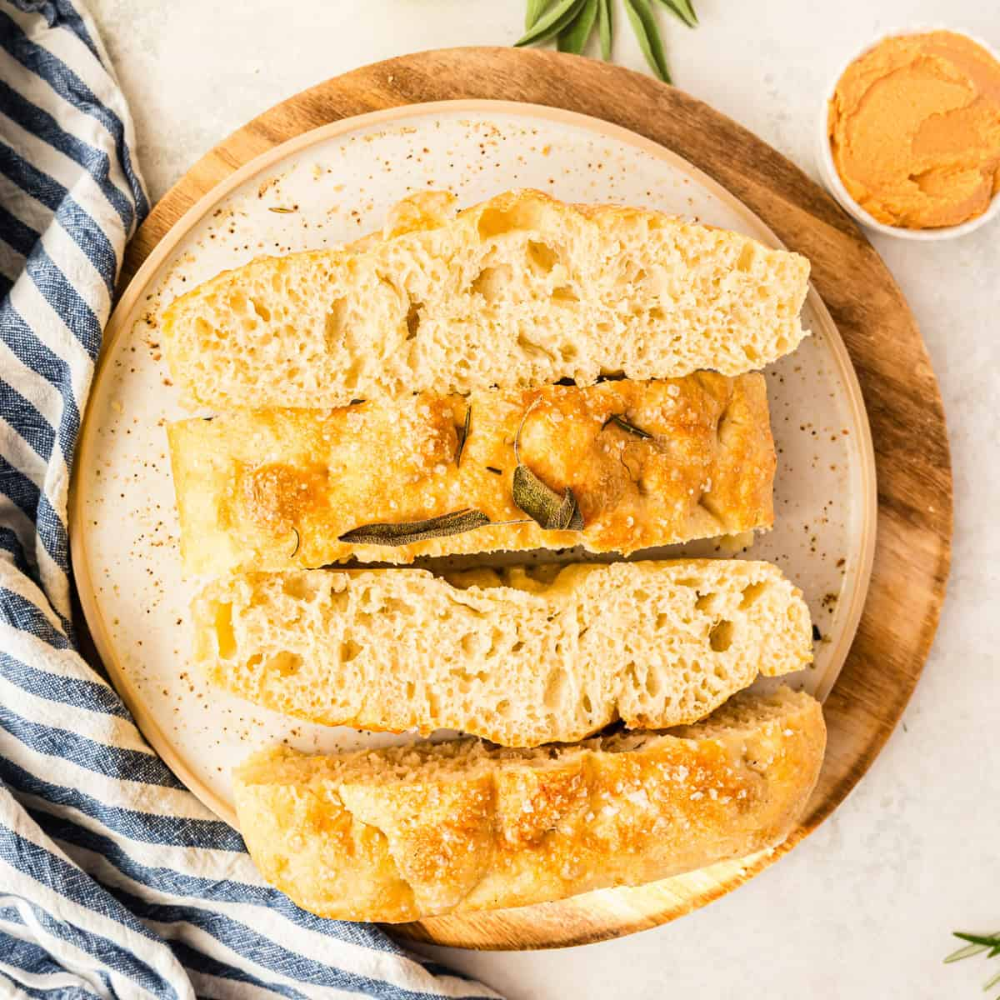

Focaccia

Über das Rezept
Das hier ist das standard Culinaria Restaurant Focaccia Rezept.
Seit Jahren bewährt, kann mit allerlei gewürzen und Kräutern gepimpt und verbessert werden.
Das 4-fache Rezept ergibt 3 1/1 GN.
Das Rezept
Zutaten
- 1000g Mehl
- 700ml Wasser
- 35g Salz
- 20g Zucker
- 1,5 Würfel Hefe
Arbeitsablauf
- Lauwarmes Wasser, Zucker, Salz und Hefe kombinieren und Hefe blühen lassen
- Wasser zum Mehl hinzugeben und einarbeiten bis sich alles verbunden hat
- Kneten bis ein glatter Teig entsteht (3-5min)
- Teig in eine Form geben und gleichmäßig verteilen
- 1-2 Stunden gehen lassen und Ofen auf 230°C vorheizen lassen
- Teig 15-20 Minuten backen
- Fertiges Focaccia aus der Form nehmen und komplett auskühlen lassen
Home